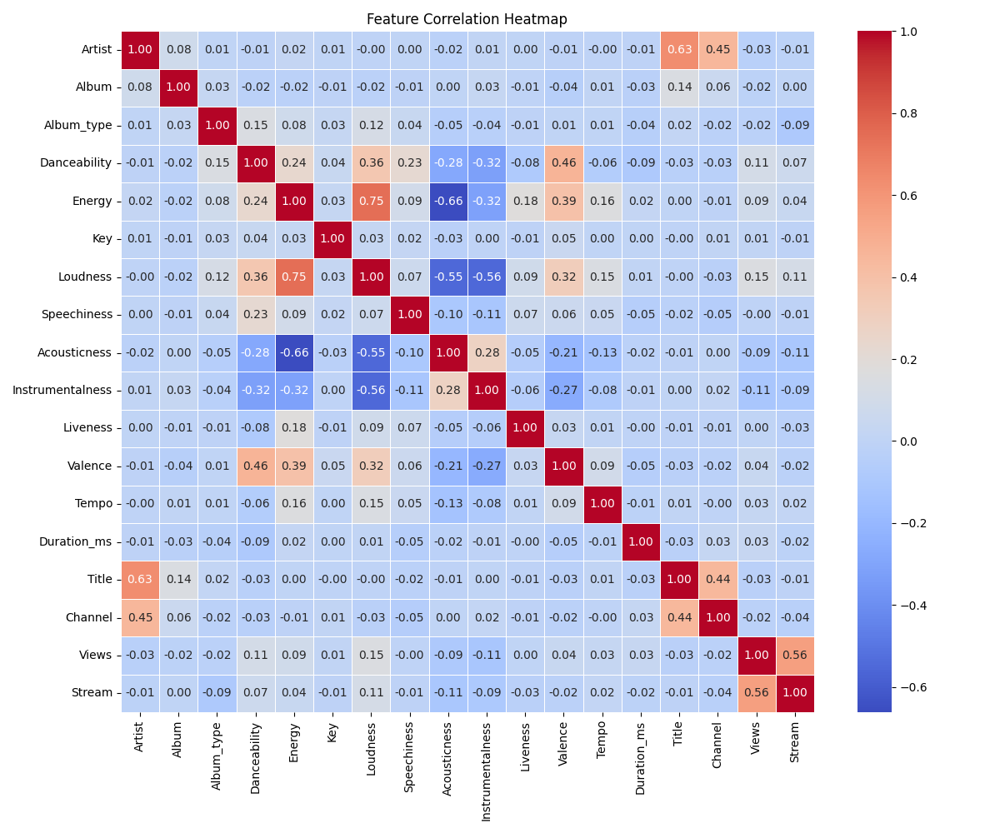
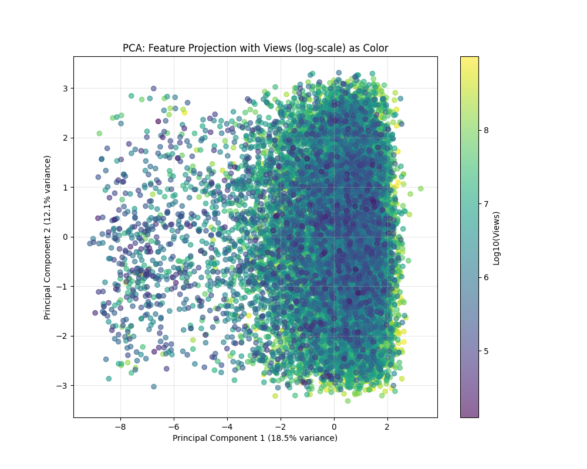
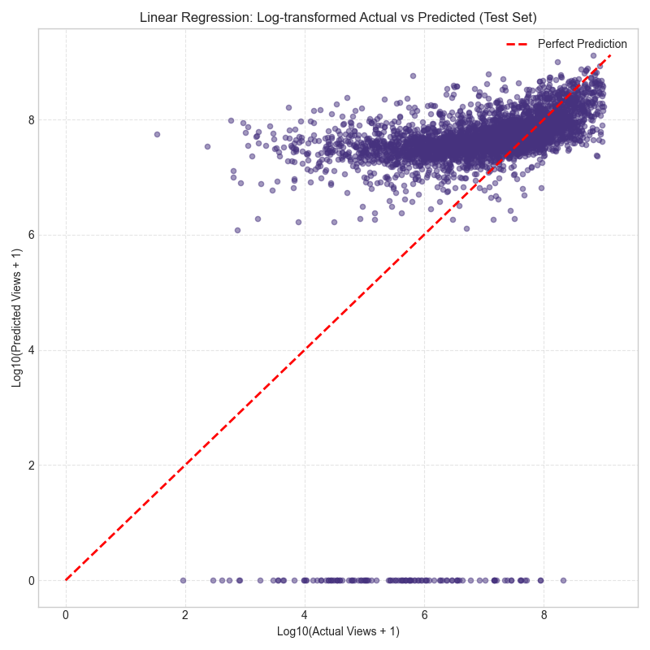
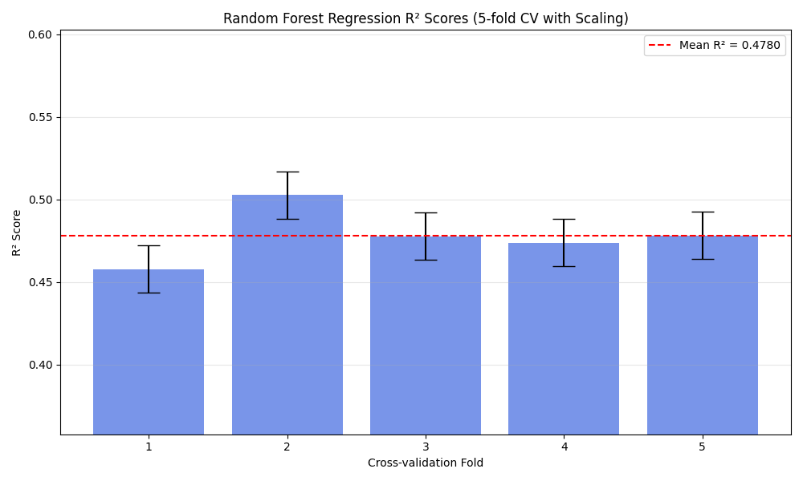
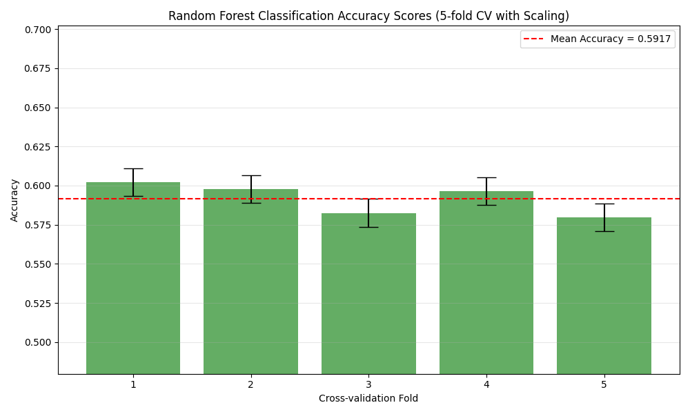
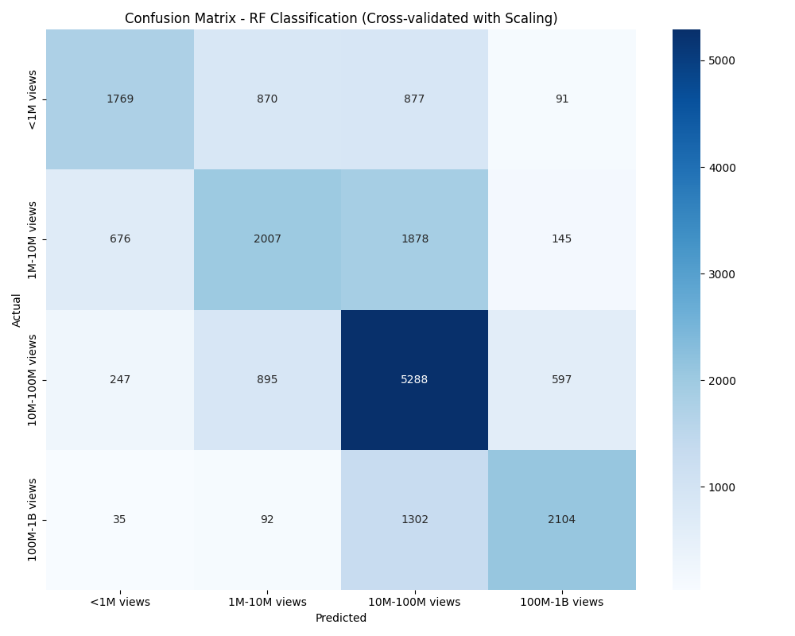

Music Video Engagement Predictor
Analysis Report
Generated on 2025-04-14 20:29:42
1. Feature Analysis
This section provides insights into feature correlations and distributions.
Feature Correlation Heatmap
This heatmap shows the correlations between different features in the dataset.
2. Principal Component Analysis (PCA)
PCA was used to reduce dimensionality and visualize the data in 2D and 3D space.
2D PCA Visualization
This plot shows how the data points are distributed in a 2D principal component space, colored by view count.
3D PCA Visualization

This plot shows the data in a 3D principal component space, providing additional insight into data clustering.
PCA Feature Loadings

This heatmap shows how each original feature contributes to the principal components.
PCA vs Views

This plot shows how the principal components correlate with video view counts.
3. Linear Regression Analysis
Linear regression was used as a baseline model for predicting view counts.
Actual vs Predicted Views

This plot compares the actual view counts with the predictions from the linear regression model.
Residuals Plot

This plot shows the residuals (errors) of the linear regression model against predicted values.
Log-Transformed Actual vs Predicted
This plot compares actual and predicted views on a log scale, which helps visualize the spread of values more clearly.
4. Classification Analysis
The regression problem was also treated as a classification task by binning view counts into categories.
Confusion Matrix
This confusion matrix shows how well the model classifies videos into different view count categories.
View Categories Distribution

This plot shows the distribution of videos across different view count categories.
5. Random Forest Analysis
Random Forest models were used for both regression and classification tasks.
Random Forest Regression R² Scores Across Folds
This plot shows the R² scores for Random Forest regression across each cross-validation fold, with error bars representing standard deviation.
Random Forest Classification Accuracy Scores Across Folds
This plot shows the accuracy scores for Random Forest classification across each cross-validation fold, with error bars representing standard deviation.
Random Forest Regression Confusion Matrix

This confusion matrix shows the classification performance of the Random Forest regression model when its predictions are converted to categories.
Random Forest Classification Confusion Matrix
This confusion matrix shows the performance of the direct Random Forest classification approach, which predicts categories without going through regression first.
Random Forest Regression Feature Importance

This plot shows the relative importance of each feature in the Random Forest regression model.
Random Forest Classification Feature Importance

This plot shows the relative importance of each feature in the Random Forest classification model, which may differ from the regression model.
Decision Tree Visualization (Classification)

This visualization shows a single decision tree from the Random Forest classification model (limited to depth=3 for readability). It illustrates how the model makes decisions based on feature values.
Decision Tree Visualization (Regression)

This visualization shows a single regression decision tree (limited to depth=3 for readability). It demonstrates how the model predicts view counts based on feature values.
6. Model Comparison
This section compares the performance of different models used in this analysis.
Regression Metrics
| Model | Training R² | Test R² | Training RMSE | Test RMSE |
|---|
Classification Metrics
| Model | Accuracy | Precision | Recall | F1 Score |
|---|---|---|---|---|
| Random Forest Classification (Cross-validated) | 0.5917 (±0.0089) | 0.5984 (±0.0075) | 0.5917 (±0.0089) | 0.5858 (±0.0087) |
| Decision Tree Classification (Cross-validated) | 0.4746 (±0.0084) | 0.4753 (±0.0088) | 0.4746 (±0.0084) | 0.4748 (±0.0087) |
| Random Forest Classification (SMOTE, CV) | 0.5693 (±0.0076) | 0.5669 (±0.0078) | 0.5693 (±0.0076) | 0.5675 (±0.0076) |
| Decision Tree Classification (SMOTE, CV) | 0.4622 (±0.0082) | 0.4669 (±0.0093) | 0.4622 (±0.0082) | 0.4625 (±0.0084) |
7. Conclusion
Based on the analysis, Random Forest Regression (Cross-validated) achieved the highest performance for predicting music video engagement metrics with a test R² value of 0.4780, indicating that it can explain approximately 47.8% of the variance in view counts.
Feature importance analysis shows that user engagement metrics like Comments, Stream, Duration_ms are the most important predictors of video views. This suggests that videos that generate more user interaction tend to have higher view counts.
For classification into view count categories, the Random Forest Classification (Cross-validated) achieved an accuracy rate of 59.17%, which is a significant improvement over random guessing (which would be 20% for 5 categories).
Resampling Experiment (SMOTE)
An experiment was conducted using the Synthetic Minority Over-sampling Technique (SMOTE) within the cross-validation pipeline to address the moderate class imbalance observed in the view categories. The goal was to potentially improve the performance of the classification models (Random Forest and Decision Tree) by providing more examples of the minority classes.
However, the results indicated that applying SMOTE did not lead to an improvement in the overall cross-validated performance metrics (Accuracy, Precision, Recall, F1-score) for either the Random Forest or the Decision Tree classifier when compared to training on the original data distribution. While SMOTE might subtly alter the prediction balance across individual classes (as seen in detailed classification reports), it did not enhance the overall predictive power in this specific scenario. This suggests that for this dataset and these models, the benefits of oversampling were potentially outweighed by other factors, such as the introduction of synthetic noise or modifications to the decision boundaries that did not generalize well.